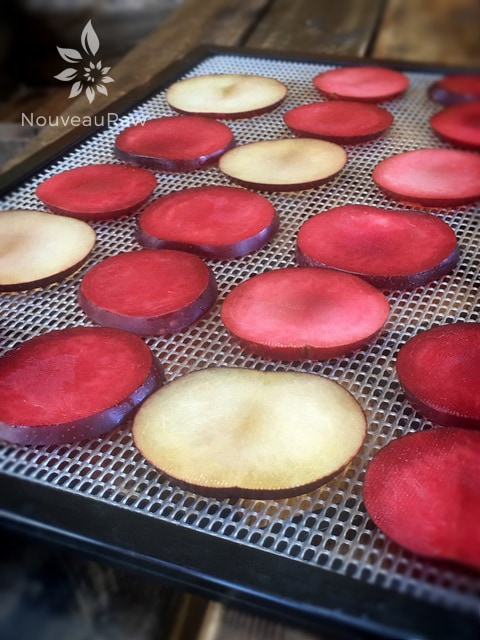
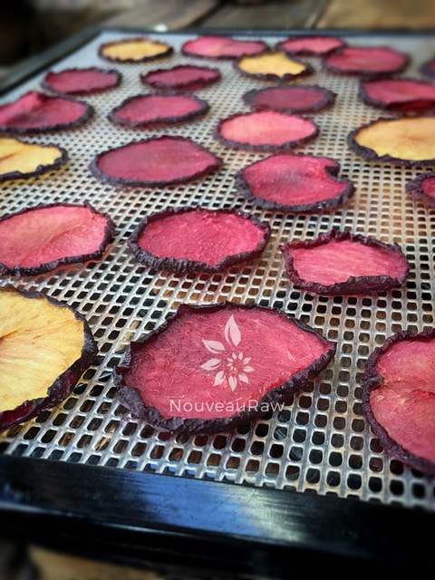
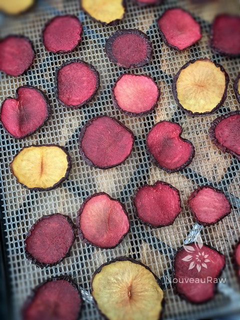
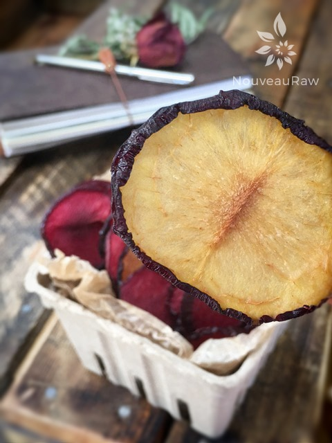

Dehydrated Plums

~ raw, dehydrated ~
It’s funny, I have always known that prunes are dried plums but yet in my mind when I think of both of them… they seem like completely different fruits. I happen to LOVE prunes.
Growing up, I would sneak them out of the kitchen cabinet as though they were a guilty pleasure to eat. When people think of prunes, they think of the digestive system and what those prunes are going to do to it… Me? They don’t affect me in that way. I can eat 20 of them or drink a quart of prune juice and it just doesn’t affect me in any way, except for pleasing my taste buds. :)
They are high in vitamin A, followed by vitamin C, vitamin K, folate, and choline. As well as potassium, phosphorus, magnesium, calcium, fluoride, and a trace amount of Iron. And let’s not forget that they also contain Omega-6 fatty acids.
Plums are available year round, but they are at their best between May and September. As you search through the bins of them at the grocery store, look for plums that are rich color and may still have a slight whitish “bloom,” indicating that they have not been over handled. Avoid those ones with excessively soft, or with cuts or bruises. Ripen plums yield to gentle pressure and feature a sweet aroma.
You can’t rush great taste so if they are slightly hard, you can keep them at room temperature until they ripen. Ripe ones can be placed in the refrigerator but should be brought to room temperature before being eaten in order to enjoy their rich flavor. For dehydrating purposes, you want the plums to be ripe but not too mushy. There are many ways of slicing them for drying. In this post, I sliced them on my mandolin. If they are too soft for that, you can use a knife. Make them as thick or thin as you wish. I didn’t find the need to pre-treat them at all. Enjoy and have fun!
Preparation:
- Don’t use mushy or bruised plums, those would be best for creating fruit leathers with.
- If possible, use a mandolin for slicing the plums. Even cuts will ensure that they all dehydrate evenly. I used the 1.5 mm slicing blade. Slice down to the pits, flip to other side and slice again down to the pit. You will have two chunks on each side left over. Cut off and dehydrate or eat as a snack for all your hard work. :)
- Place the slices on the mesh sheet that comes with the dehydrator in a single layer.
- Dehydrate at 155 degrees (F) for 1 hour, then reduce to 115 degrees (F) for about 6 hours.
- Drying time depends on several factors:
-
- Thick or thin slices – the thinner the slice, the quicker the dry time will be.
- Temperature – the lower the temperature, the longer the drying time. I recommend dehydrating them at 115 degrees (F) to preserve the enzymes and nutrients. This can take 6-8 hours.
- Humidity – the higher the humidity in the room air, the longer the dry time will be.
- Water content – the higher the water content in the plum, the longer it will take to dry.
- Store in airtight containers at room temperature for up to several months. If there is a lot of moisture left in the plums, keep them stored in the fridge.
Culinary Explanations:
- Why do I start the dehydrator at 145 degrees (F)? Click (here) to learn the reason behind this.
- When working with fresh ingredients it is important to taste test as you build a recipe. Learn why (here).
- Don’t own a dehydrator? Learn how to use your oven (here). I do however truly believe that it is a worthwhile investment. Click (here) to learn what I use.

Here they are ready for the dehydrator. They can be close together, but not touching. That way they won’t stick to each other.

And here they are dried. You can see that they shrink up some and the edges curl a tad.




© AmieSue.com